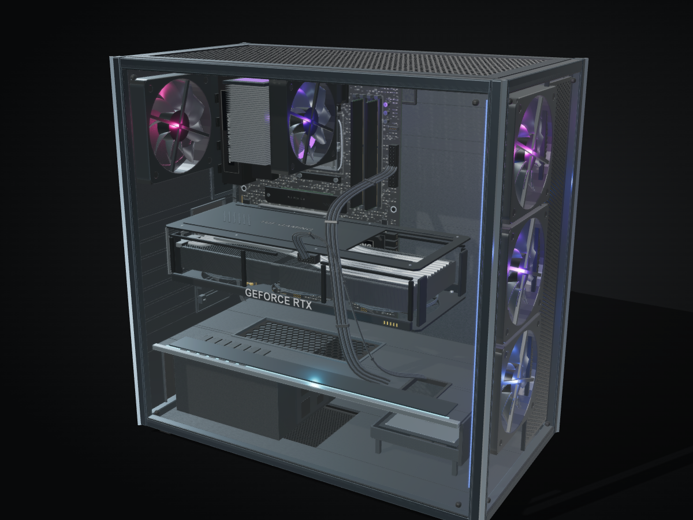

Guía de componentes
¿Qué hay dentro de una PC?
Explora cómo se conectan los componentes, desde una torre completa hasta un núcleo de cómputo de la GPU.
Explorar una PC en 3D
01Gabinete
El chasis sujeta la placa base, la tarjeta gráfica, las unidades de almacenamiento y la fuente. Sus aberturas y ventiladores permiten circular el aire. Retira los paneles del modelo para ver cómo se montan las piezas en una torre ATX.
02Placa base
La placa base conecta los componentes. El procesador ocupa el zócalo, la memoria va en las ranuras DIMM y las tarjetas de expansión se conectan por PCI Express. Inspecciona las ranuras M.2 para SSD, los conectores y los circuitos que alimentan el procesador.
03Procesador (CPU)
La CPU ejecuta instrucciones de programas y del sistema operativo. Sus núcleos disponen de cachés para acceder rápido a los datos más usados. Los modelos Ryzen 9 9950X y Core Ultra 9 285K muestran cómo se organizan en chiplets o mosaicos. Los diagramas representan la arquitectura lógica de cada chip.
04Tarjeta gráfica
Una tarjeta gráfica integra la GPU, la memoria de vídeo y los sistemas de alimentación y refrigeración. Abre la RTX 5090 para separar sus ventiladores, cubierta, tubos de calor y placa. Entra en el GB202 para ver sus clústeres y multiprocesadores de flujo.
La Radeon RX 9070 XT permite explorar los motores de sombreado y las unidades de cómputo del Navi 48. En la Intel Arc B580 puedes recorrer las secciones de renderizado, los núcleos Xe y los motores vectoriales y matriciales XMX.
05Memoria RAM
La memoria de acceso aleatorio guarda temporalmente los datos y programas que utiliza el procesador. Su contenido se pierde al cortar la alimentación. Los módulos de escritorio encajan en ranuras DIMM con una muesca que indica su orientación.
06Almacenamiento
Un SSD conserva los archivos en memoria flash cuando apagas el equipo. El modelo SATA permite ver sus conexiones de datos y de alimentación. Abre el SSD M.2 NVMe para inspeccionar el controlador, la memoria NAND, la DRAM y los contactos.
07Fuente de alimentación
La fuente convierte la corriente alterna en corriente continua y la distribuye a la placa base, el procesador y la tarjeta gráfica. En el visor puedes seguir el cableado e inspeccionar las etapas internas del modelo educativo.
08Refrigeración
La interfaz térmica conduce calor del chip al disipador. Los tubos de calor lo distribuyen por las aletas y los ventiladores expulsan el aire caliente. Compara el disipador de la CPU, la refrigeración de la GPU y el circuito líquido para ver sus diferencias.
Cómo usar PC Anatomy
- Gira el modelo. Arrastra la torre. Usa la rueda o pellizca la pantalla para acercarte.
- Desmonta la torre. Elige Montado, Desmontaje o Inventario en la barra inferior, o pulsa Auto.
- Inspecciona una pieza. Haz clic derecho para abrir su ficha o haz clic izquierdo para explorar su interior cuando esté disponible. En pantallas táctiles, toca la pieza.
- Regresa al módulo anterior. Usa Atrás y Adelante en el visor o los botones laterales 4 y 5 del ratón.
El visor utiliza JavaScript y WebGL. Las fichas presentan cada nombre en español e inglés y enlazan a las referencias técnicas.
Empezar a explorarAceleración gráfica del navegador
Activa la aceleración gráfica si el visor tarda en responder.
- Chrome. En Configuración → Sistema, activa la aceleración gráfica y reinicia el navegador. También puedes abrir
chrome://settings/system. - Edge. En Configuración → Sistema y rendimiento, activa la aceleración gráfica y reinicia Edge. También puedes abrir
edge://settings/system. - Firefox. En Configuración → General → Rendimiento, desactiva la configuración recomendada, habilita la aceleración por hardware y reinicia Firefox. Guía de Firefox.
Safari y la mayoría de los navegadores móviles gestionan la aceleración de forma automática.
Volver al visor 3D